대칭적인 중첩 select를 XOR와 select로 바꾸기
작은 fold에서도 조건 타입의 일치와 사용처에 따른 비용을 따로 확인해야 한다.
LLVM-Issue98800-PR99245.pptx의 전체 내용입니다. 설명·코드·표·검증 기록을 생략하지 않고 옮겼습니다.
이 문서의 목차
LLVM 컴파일러 최적화 딥다이브 / select of symmetric selects 폴딩
페이지 배치·기호·도식 확인하기

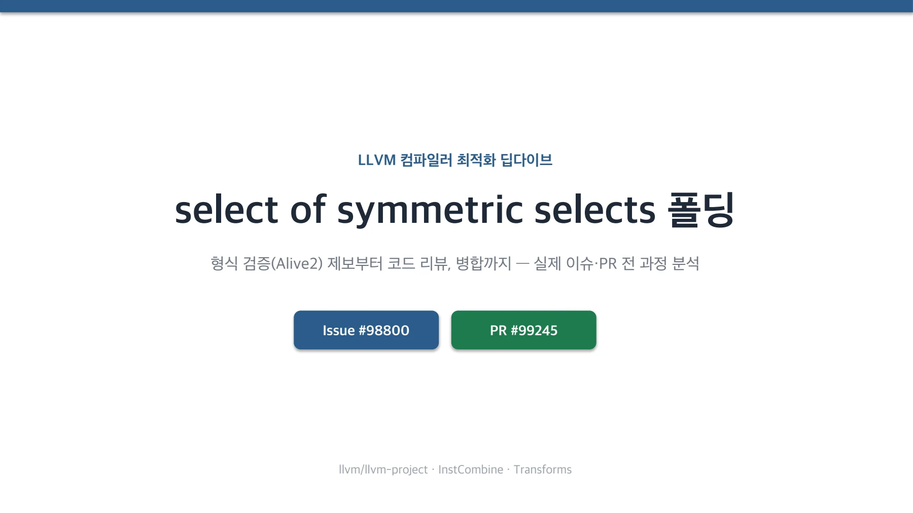
AGENDA / 오늘 다룰 내용
페이지 배치·기호·도식 확인하기

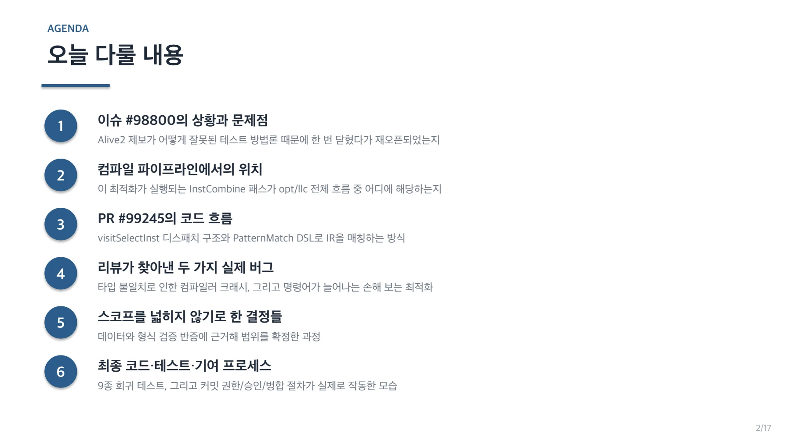
BACKGROUND / InstCombine은 컴파일 파이프라인 어디에 있나
페이지 배치·기호·도식 확인하기

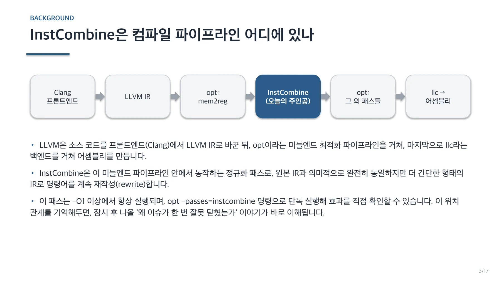
ISSUE #98800 / Alive2가 찾아낸 누락된 최적화
alive2.llvm.org — @src ≡ @tgt (증명됨)
define i32 @src(i32 %a, i32 %b, i1 %c1, i1 %c2) {
%sel1 = select i1 %c1, i32 %a, i32 %b
%sel2 = select i1 %c1, i32 %b, i32 %a
%ret = select i1 %c2, i32 %sel1, i32 %sel2
ret i32 %ret
}
define i32 @tgt(i32 %a, i32 %b, i1 %c1, i1 %c2) {
%xor = xor i1 %c1, %c2
%ret = select i1 %xor, i32 %b, i32 %a
ret i32 %ret
}페이지 배치·기호·도식 확인하기

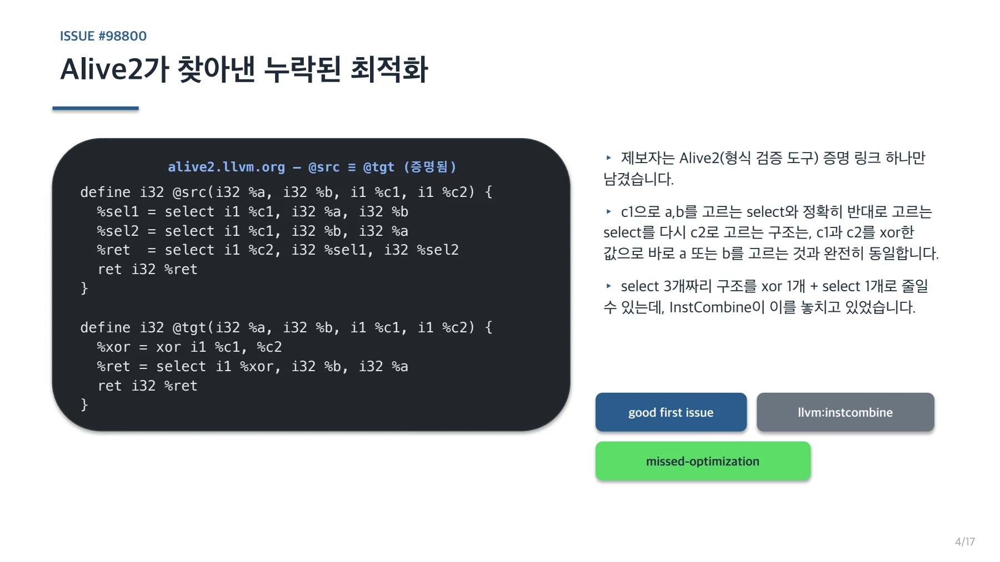
PROBLEM ① / 성급하게 닫혔던 이슈
페이지 배치·기호·도식 확인하기

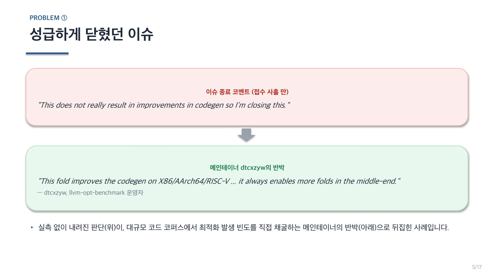
ROOT CAUSE / 왜 처음엔 차이가 없어 보였나: llc vs opt
페이지 배치·기호·도식 확인하기

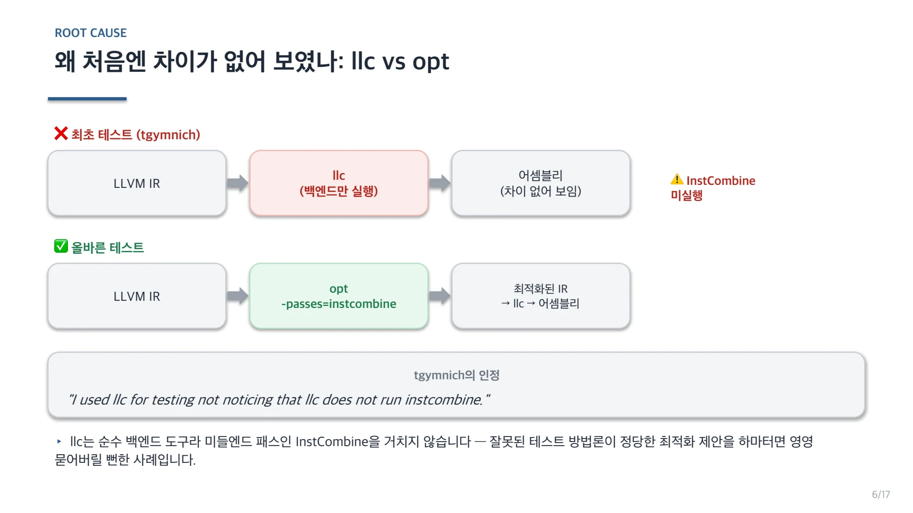
PR #99245 / PR #99245 개요
PR 설명 (원문)
fixes #98800
Fold patterns like: select c2 (select c1 a b) (select c1 b a)
into: select (xor c1 c2) b a
Alive2 proofs: alive2.llvm.org/ce/z/4QAm4K , .../vTVRnC페이지 배치·기호·도식 확인하기

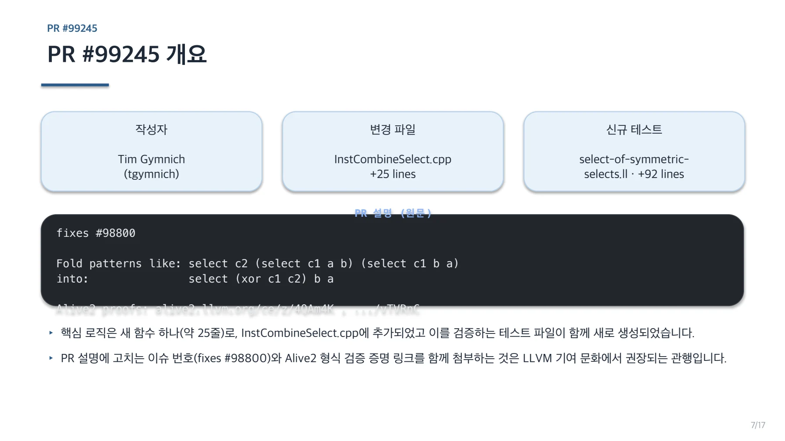
CODE FLOW / visitSelectInst 안에서의 실행 위치
페이지 배치·기호·도식 확인하기

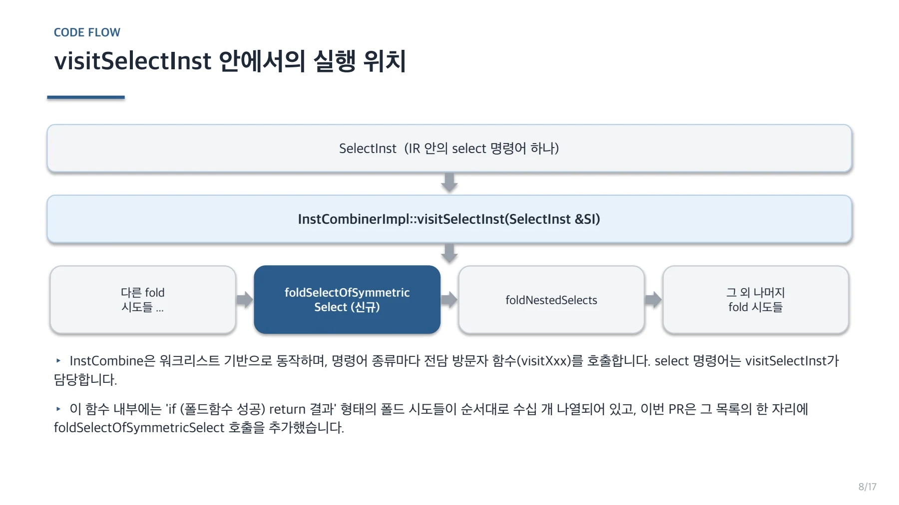
PATTERN MATCH / IR 구조를 매칭하는 방법: PatternMatch
페이지 배치·기호·도식 확인하기

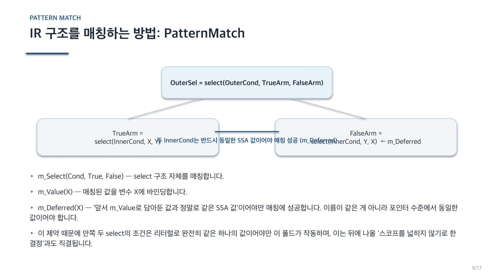
REVIEW FINDING ① / 리뷰가 찾아낸 문제 ① — 타입 불일치 크래시
Builder.CreateXor(InnerCond, OuterCond)페이지 배치·기호·도식 확인하기

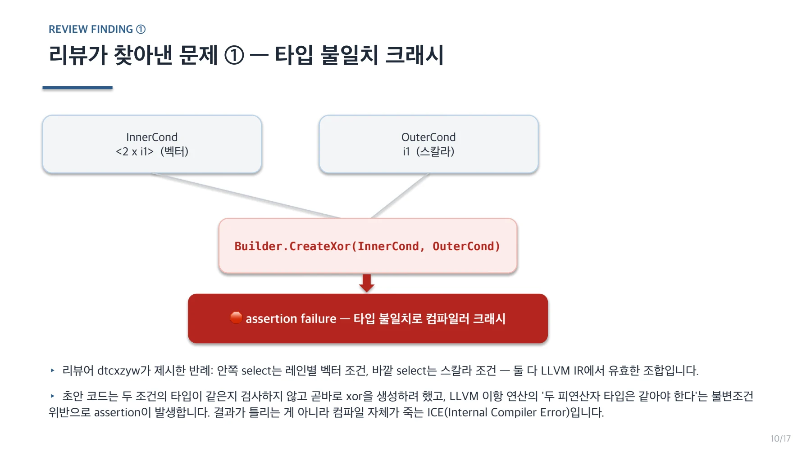
FIX ① / 해결 ① — 타입 가드 추가
InstCombineSelect.cpp — foldSelectOfSymmetricSelect()
if (!match(&OuterSelVal, m_Select(m_Value(OuterCond),
m_OneUse(m_Select(...)), m_OneUse(m_Select(...)))))
return nullptr;
+ if (OuterCond->getType() != InnerCond->getType())
+ return nullptr; // ← 타입이 다르면 안전하게 포기
Value *Xor = Builder.CreateXor(InnerCond, OuterCond);페이지 배치·기호·도식 확인하기

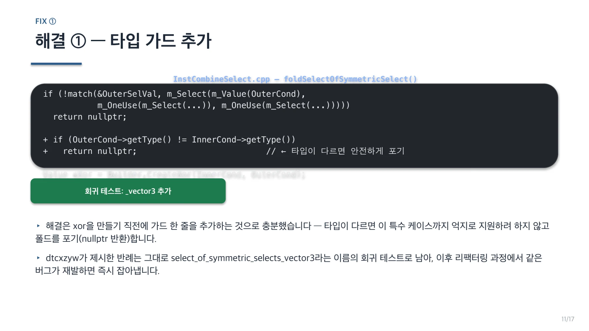
REVIEW FINDING ② / 리뷰가 찾아낸 문제 ② — 손해 보는 최적화
sel1 = select c1, a, b (다른 곳에서도 사용)
sel2 = select c1, b, a (다른 곳에서도 사용)
ret = select c2, sel1, sel2sel1 = select c1, a, b ← 여전히 필요(외부 사용)
sel2 = select c1, b, a ← 여전히 필요(외부 사용)
xor = xor c1, c2 ← 신규
ret = select xor, b, a ← 신규페이지 배치·기호·도식 확인하기

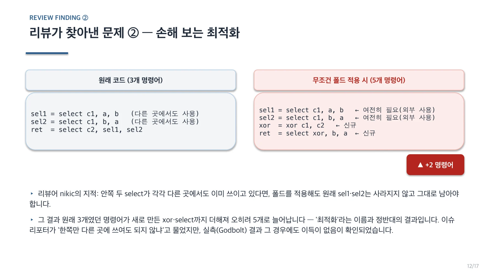
FIX ② / 해결 ② — m_OneUse로 이득 보장
양쪽 모두 m_OneUse(...) 로 감쌈
m_Select(m_Value(OuterCond),
m_OneUse(m_Select(m_Value(InnerCond),
m_Value(InnerTrueVal),
m_Value(InnerFalseVal))),
m_OneUse(m_Select(m_Deferred(InnerCond),
m_Deferred(InnerFalseVal),
m_Deferred(InnerTrueVal))))sel1, sel2 → 완전히 dead, 자동 삭제
xor = xor c1, c2
ret = select xor, b, a페이지 배치·기호·도식 확인하기

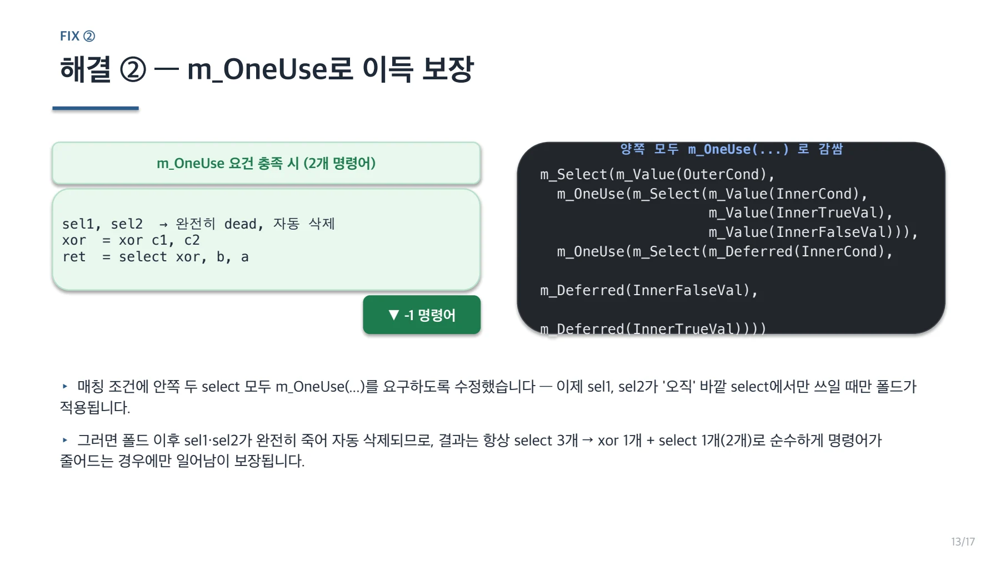
SCOPE DECISIONS / 확장하지 않기로 한 것들
페이지 배치·기호·도식 확인하기

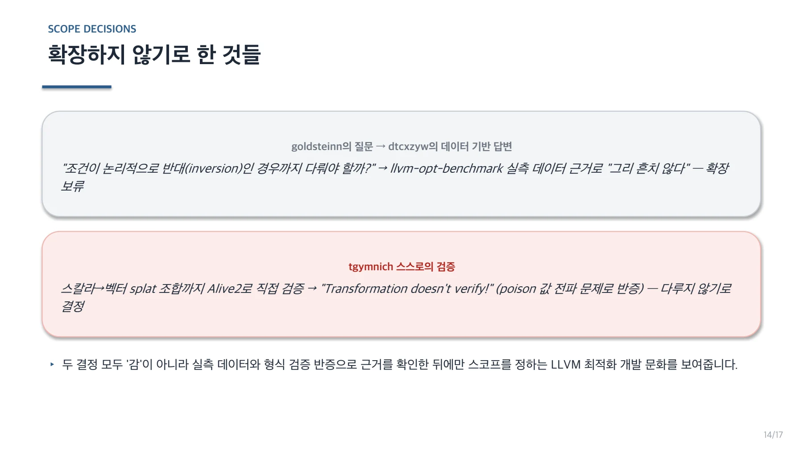
TEST SUITE / 최종 회귀 테스트 9종
| # | 테스트 이름 | 검증 내용 | 결과 |
| 1 | select_of_symmetric_selects | 기본 positive case | ✅ 폴드 |
| 2 | ..._negative1 | 안쪽 조건이 c1이 아닌 c2 (불일치) | ❌ 폴드 안 됨 |
| 3 | ..._negative2 | 값이 a,b,c로 대칭 아님 | ❌ 폴드 안 됨 |
| 4 | ..._multi_use1 | sel2만 외부에서 추가 사용 | ❌ 폴드 안 됨 |
| 5 | ..._multi_use2 | sel1·sel2 모두 외부에서 사용 | ❌ 폴드 안 됨 |
| 6 | ..._commuted | 바깥 select 참/거짓 순서 반전 | ✅ 폴드 |
| 7 | ..._vector1 | 스칼라 조건 + 벡터 값 | ✅ 폴드 |
| 8 | ..._vector2 | 벡터 조건 + 벡터 값 (타입 일치) | ✅ 폴드 |
| 9 | ..._vector3 | 안/밖 조건 타입 불일치 (크래시 회귀) | ❌ 폴드 안 됨 |
페이지 배치·기호·도식 확인하기

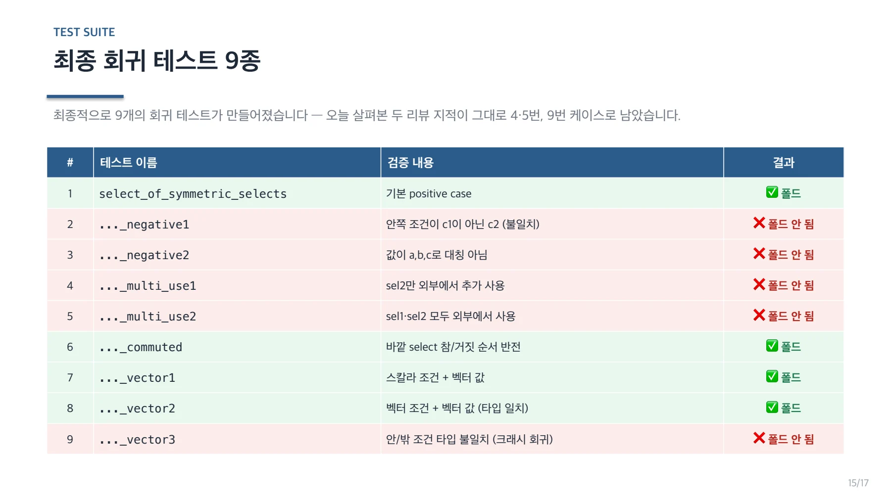
CONTRIBUTION PROCESS / 기여 프로세스로 본 이슈부터 병합까지
페이지 배치·기호·도식 확인하기

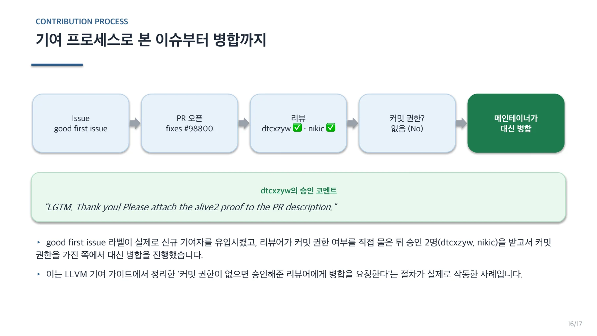
CONCLUSION / 결론
페이지 배치·기호·도식 확인하기

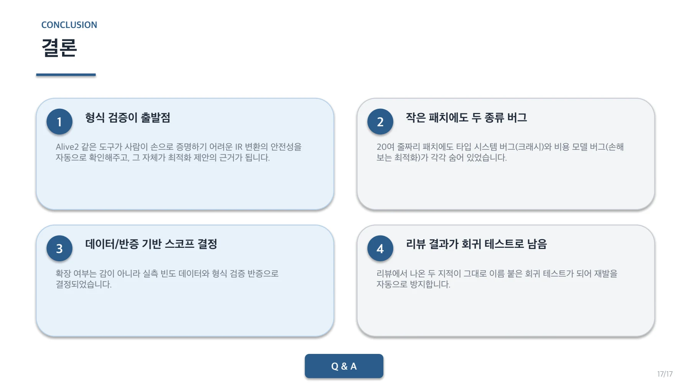
핵심 원리와 편집 주석
변환
; Before
%s1 = select i1 %c1, i32 %a, i32 %b
%s2 = select i1 %c1, i32 %b, i32 %a
%r = select i1 %c2, i32 %s1, i32 %s2
; After
%x = xor i1 %c1, %c2
%r = select i1 %x, i32 %b, i32 %a안쪽 두 select는 같은 조건과 반대 순서의 값을 사용한다. 바깥 선택까지 합치면 조건 두 개의 XOR로 최종 값을 고를 수 있다.
검증 도구의 범위
이슈는 처음에 코드 생성 이득이 없다는 이유로 닫혔다가 다시 열렸다. 최초 확인은 InstCombine을 실행하지 않은 llc 비교였다.
opt -passes=instcombine -S input.ll -o combined.ll
llc combined.ll -o output.s검증하려는 패스를 실행하지 않으면 해당 최적화의 유무를 판단할 수 없다. IR 변화와 기계어 변화를 순서대로 확인한다.
리뷰에서 추가한 조건
- 안쪽과 바깥쪽 조건의 타입이 같아야 한다.
- 두 안쪽 select는 각각 바깥 select에서만 사용되어야 한다.
- 같은 조건과 반대 순서의 같은 SSA 값인지 확인한다.
조건 타입이 다르면 XOR 생성에서 크래시가 날 수 있다. 안쪽 select가 다른 곳에서도 필요하면 새 XOR 비용만 추가되고 기존 select가 남을 수 있다.
검증과 범위 결정
자료는 기본형, 피연산자 순서, scalar·vector 조합, multi-use, 조건 타입 불일치를 포함한 9종 회귀 테스트를 정리한다.
반대 조건으로 확장하는 안과 scalar 조건을 vector로 넓히는 안은 사용 빈도와 검증 결과를 근거로 보류했다. 이미 병합된 PR의 리뷰 과정을 분석한 자료다.
문서 전문과 버전
- PPTXPPTX 원자료 · 17장LLVM-Issue98800-PR99245.pptx
각 자료는 별도의 버전입니다. 같은 주제라도 구현 상태·설명 범위·수치가 다를 수 있습니다.
관련 이슈와 PR
구현·병합 상태와 측정값은 해당 제출 자료의 작성 시점 기준입니다.